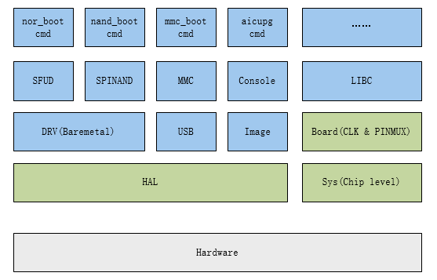

3.5. 设计说明¶
3.5.1. 源码说明¶
tinySPL 源码分几部分:
Sys |
bsp/artinchip/sys/<chip>/ |
SoC 初始化相关代码，与应用共用 |
Board |
target/<chip>/<board>/ |
板子初始化相关代码，与应用共用 |
HAL |
bsp/artinchip/hal/ |
HAL 驱动代码，与应用共用 |
Boot |
application/baremetal/bootloader/ |
Bootloader 代码 |
3.5.2. 软件架构¶

图 3.19 软件架构¶
由于 Boot 的功能和应用场景比较确定和单一，因此这里将 Boot 设计为一个 Baremetal 版本的应用，具有以下特点：
与应用共用部分代码，简化开发和板级配置
无线程、无中断处理，只针对单一任务
支持命令行模式，可根据需要，定义不同的命令
3.5.3. 关键流程¶
3.5.3.1. 系统初始化¶
_start //bsp/artinchip/sys/d21x/startup_gcc.S
|-> save_boot_params // bsp/artinchip/sys/d21x/boot_param_gcc.S
|-> icache_enable();
|-> dcache_enable(); // bsp/artinchip/sys/d21x/system.c
|-> SystemInit();
|-> main(); // application/baremetal/bootloader/main.c
|-> board_init();
| |-> heap_init();
| |-> aic_board_sysclk_init(); // target/d21x/<board>/board.c
| |-> aic_board_pinmux_init();
| |-> uart_init(cons_uart);
| |-> stdio_set_uart(cons_uart);
|-> console_init();
系统初始化的过程中，并不会设计不必要的驱动等模块的初始化。所有的驱动和模块， 都只在需要使用时进行初始化，这样可以减少启动过程中的不必要时间消耗，加快启动速度。
3.5.3.2. 启动和升级¶
main(); // application/baremetal/bootloader/main.c
|-> board_init();
|-> console_init();
|-> bd = aic_get_boot_device();
| // 根据启动参数，判断当前的启动设备
|
|-> console_set_bootcmd("nor_boot");
| // 此处根据 boot_device 的类型，设置不同的bootcmd，比如 aicupg usb 0
|
|-> console_loop();
|-> console_run_cmd(g_console->bootcmd);
|-> _console_loop(g_console);
// 当执行 bootcmd 失败时，会进入串口控制台，等待用户交互